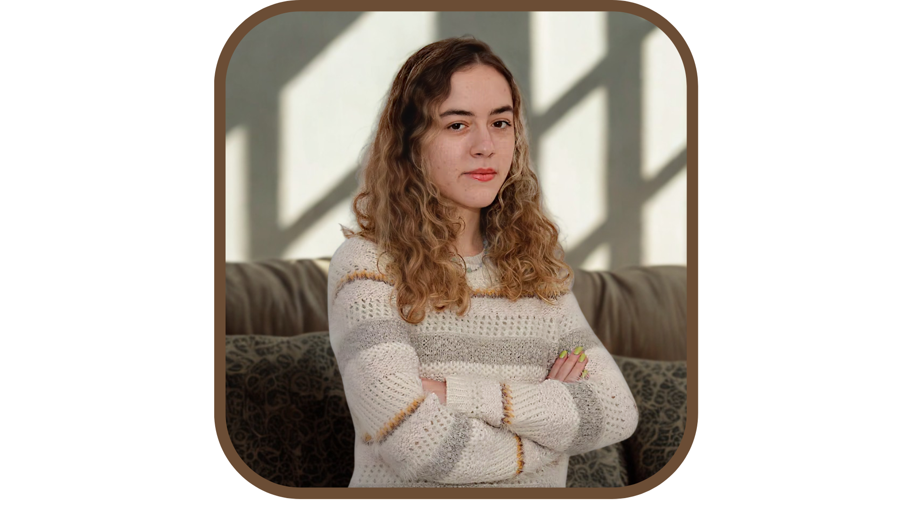

Você merece um espaço onde possa ser ouvido(a) de verdade.
Um ambiente seguro, acolhedor e sem julgamentos para você explorar suas emoções, se reconectar consigo e encontrar novos caminhos — no seu tempo, no seu ritmo.
Agende sua sessãoCOMO POSSO AJUDAR
Encontre apoio para suas questões
A terapia é um processo de autoconhecimento que pode auxiliar em diversas áreas da vida. Ofereço um espaço de acolhimento para lidar com desafios como:
Autoconhecimento
Aprofundar a compreensão sobre si, seus desejos e seus padrões de comportamento.
Ansiedade e Estresse
Desenvolver recursos para lidar com a ansiedade, preocupações e as pressões do dia a dia.
Relacionamentos
Melhorar a qualidade das suas relações, sejam amorosas, familiares ou profissionais.
Transições de Vida
Encontrar suporte para lidar com mudanças, lutos, perdas e novas fases da vida.
Questões Profissionais
Explorar insatisfações, buscar novas direções e lidar com os desafios da carreira.
Sentido e Propósito
Refletir sobre o que é verdadeiramente importante para você e construir uma vida com mais sentido.
— Clarice Lispector
Laura Breitschaft
CRP 06/203681Oiê! Meu nome é Laura e sou graduada em psicologia pela Universidade Padre Anchieta em Jundiaí.
Realizo atendimentos para crianças, adolescentes e adultos e ofereço um espaço seguro e acolhedor para que você possa se expressar livremente, sem julgamentos.
Também tive a alegria de ser voluntária na ONG Sonhar Acordado, uma experiência que reforçou ainda mais minha escolha pela psicologia e pelo compromisso com o bem-estar do outro.
Minha Trajetória
- Graduação em Psicologia — Universidade Padre Anchieta
- Pós-graduação em Fenomenologia — IFEN RJ
- Curso: Psicologia Clínica Existencial com base em Kierkegaard — Maitê Sartori
SERVIÇOS
Psicoterapia e Orientação
Conheça os principais serviços oferecidos para adultos, crianças e adolescentes.
Psicoterapia Individual
Um espaço seguro e confidencial para explorar suas questões, desenvolver autoconhecimento e encontrar novas formas de lidar com os desafios da vida. Atendimento online ou presencial.
Psicoterapia Infantil
Um espaço seguro e criativo onde a criança se expressa, explora seus sentimentos e supera medos. O atendimento infantil é realizado exclusivamente de forma presencial.
Espaço do Adolescente
Um ambiente de escuta sem julgamentos para falar sobre ansiedade, escola e as grandes questões dessa fase, fortalecendo a autoestima e a confiança.
PSICOTERAPIA
Nossa Jornada Terapêutica
O processo terapêutico é uma construção conjunta, uma jornada de descoberta que percorremos no seu ritmo. Ele se baseia em alguns pilares fundamentais:
O Acolhimento
Nosso primeiro passo é uma conversa inicial, onde você pode me conhecer, tirar dúvidas e sentir se este é o espaço certo para você. É o início da construção de um vínculo de confiança.
A Escuta
Você é convidado(a) a falar sobre o que vier à mente. Minha escuta é atenta e livre de julgamentos, focada em compreender sua singularidade e a forma como você percebe e vive suas experiências.
A Descoberta
Em nossos encontros, o convite será para olharmos juntos para a sua experiência, tal como ela se apresenta no momento. A terapia se torna um espaço para descrever e acolher seu modo de sentir e perceber o mundo, permitindo que novos sentidos e possibilidades se revelem a partir de sua própria vivência.
Modalidades de Atendimento
Ofereço atendimento online (por videochamada) e presencial, de acordo com a sua necessidade. O atendimento online proporciona flexibilidade e a possibilidade de realizar a terapia no conforto do seu lar, de qualquer lugar do Brasil. Para crianças, o atendimento é exclusivamente presencial, garantindo o vínculo e as interações necessárias para o processo terapêutico infantil.
ABORDAGEM
Fenomenologia Existencial
Minha prática é fundamentada na abordagem fenomenológico-existencial, que valoriza sua experiência vivida como ponto de partida para o autoconhecimento.
O que é a Fenomenologia Existencial?
A fenomenologia existencial é uma abordagem da psicologia que se dedica a compreender a experiência humana tal como ela é vivida — sem encaixá-la em categorias pré-definidas ou rótulos. Ao invés de buscar "o que há de errado", buscamos juntos o que faz sentido na sua história.
Com inspiração no pensamento de Søren Kierkegaard, acredito que cada pessoa é singular e que a existência não pode ser reduzida a fórmulas. Kierkegaard nos ensina que o caminho para uma vida mais autêntica passa pela coragem de olhar para si, assumir suas escolhas e abraçar as incertezas que fazem parte do existir.
Na prática, isso significa que no nosso espaço terapêutico, o foco está em você: na forma como você se relaciona com suas emoções, com os outros e com o mundo. Não há respostas prontas — há escuta, reflexão e a construção de um sentido que é só seu.
"A vida só pode ser compreendida olhando-se para trás; mas só pode ser vivida olhando-se para a frente." — Søren Kierkegaard
POR QUE COMEÇAR?
Benefícios da Terapia
A psicoterapia é um investimento em você. Conheça alguns dos benefícios que o processo terapêutico pode proporcionar:
Autoconhecimento Profundo
Compreender seus padrões, motivações e a forma como você se relaciona com o mundo ao seu redor.
Regulação Emocional
Desenvolver mais consciência sobre suas emoções e encontrar formas saudáveis de lidar com elas no dia a dia.
Relacionamentos mais Saudáveis
Melhorar a comunicação, estabelecer limites e construir vínculos mais autênticos e significativos.
Manejo da Ansiedade
Compreender as raízes da ansiedade e desenvolver recursos internos para enfrentar os momentos difíceis.
Vida com mais Sentido
Refletir sobre suas escolhas, valores e propósito, caminhando em direção a uma existência mais autêntica.
Cuidado com Saúde Mental
Assim como cuidamos do corpo, a mente também merece atenção. A terapia é um ato de cuidado e coragem.
UMA MENSAGEM PARA VOCÊ
Para quem está pensando em começar
Sei que dar o primeiro passo pode parecer difícil. Talvez você esteja se perguntando se é o momento certo, se a terapia é para você, ou se vale a pena. Quero que saiba que não existe um momento "perfeito" para começar — o que existe é a sua vontade de se conhecer melhor, e isso já é muito.
Aqui, você vai encontrar um espaço livre de julgamentos, onde sua história é ouvida com respeito e cuidado. Não há respostas certas ou erradas; há um caminho que percorremos juntos, no seu ritmo.
Cuidar de si não é fraqueza, é um dos atos mais corajosos que alguém pode ter. Se você chegou até aqui, algo em você já está buscando essa mudança. E eu ficarei feliz em te acompanhar nessa jornada.
Últimas do Instagram
Acompanhe meus conteúdos sobre psicologia, autoconhecimento e bem-estar.


INFORMAÇÕES
Dúvidas Frequentes
É natural ter perguntas antes de iniciar um processo terapêutico. Reuni aqui algumas das dúvidas mais comuns.
O valor da sessão é informado durante nosso primeiro contato. Entre em contato para que eu possa entender sua necessidade e passar todas as informações detalhadas.
Cada sessão tem a duração de 50 minutos e, geralmente, ocorrem uma vez por semana em dia e horário a serem combinados previamente.
Ofereço ambas as modalidades! Para adultos e adolescentes, o atendimento pode ser online (por videochamada) ou presencial. Para crianças, o atendimento é exclusivamente presencial, para garantir a qualidade do vínculo terapêutico.
A fenomenologia existencial é uma abordagem que busca compreender a experiência humana tal como ela é vivida, sem rótulos ou diagnósticos prévios. O foco é em você: na sua história, nos seus sentimentos e na forma como você percebe o mundo. É um convite ao autoconhecimento genuíno.
Você pode me enviar uma mensagem pelo WhatsApp clicando em qualquer um dos botões de agendamento espalhados pelo site. Será um prazer conversar com você!
Pronto(a) para dar o primeiro passo?
Cuidar da sua saúde emocional é um ato de coragem. Entre em contato e vamos iniciar essa jornada juntos.
Agende sua sessão!